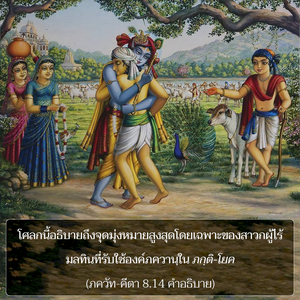

สำหรับผู้ที่ระลึกถึงข้าอยู่ตลอดเวลาโดยไม่เบี่ยงเบนจะบรรลุถึงข้าโดยง่ายดาย เนื่องจากเขาปฏิบัติการอุทิศตนเสียสละรับใช้อยู่เสมอ โอ้ โอรสพระนาง ปฺฤถา

โศลกนี้อธิบายถึงจุดมุ่งหมายสูงสุดโดยเฉพาะของสาวกผู้ไร้มลทิน ที่รับใช้องค์ภควานฺใน ภกฺติ-โยค นั้นจะบรรลุถึง โศลกก่อนหน้านี้ได้กล่าวถึงสาวกสี่ประเภท คือ ผู้มีความทุกข์ ผู้ใคร่รู้ ผู้แสวงหาผลกำไรทางวัตถุ และนักปราชญ์ผู้คาดคะเน ได้อธิบายหลายวิธีเพื่อความหลุดพ้นด้วย เช่น กรฺม-โยค, ชฺญาน-โยค และ หฐ-โยค หลักธรรมของระบบโยคะเหล่านี้มี ภกฺติ รวมอยู่บ้าง แต่โศลกนี้กล่าวถึง ภกฺติ-โยค ที่บริสุทธิ์โดยเฉพาะโดยไม่มีการผสมของ ชฺญาน, กรฺม หรือ หฐ ด้วยการใช้คำว่า อนนฺย-เจตาห์ ใน ภกฺติ-โยค ที่บริสุทธ์ สาวกไม่ปรารถนาสิ่งอื่นใดนอกจากองค์กฺฤษฺณ สาวกผู้บริสุทธิ์ไม่ปรารถนาที่จะได้รับการส่งเสริมให้ไปโลกสวรรค์ หรือปรารถนามาเป็นหนึ่งเดียวกับ พฺรหฺม-โชฺยติรฺ ความหลุดพ้น หรือเป็นอิสระจากพันธนาการทางวัตถุสาวกผู้บริสุทธิ์ไม่ต้องการสิ่งใดๆ ทั้งสิ้น ใน ไจตนฺย-จริตามฺฤต สาวกผู้บริสุทธิ์เรียกว่า นิษฺกาม หมายความว่า ท่านไม่ปรารถนาผลประโยชน์เพื่อตนเอง ความสงบอันสมบูรณ์เป็นของท่านโดยเฉพาะ ไม่ใช่พวกที่ดิ้นรนเพื่อผลประโยชน์แห่งตน ในขณะที่ ชฺญาน-โยคี, กรฺม-โยคี หรือ หฐ-โยคี มีผลประโยชน์ส่วนตัว สาวกผู้สมบูรณ์ไม่มีความปรารถนาอื่นใดนอกจากทำให้บุคลิกภาพสูงสุดแห่งพระเจ้าทรงมีความชื่นชมยินดี ดังนั้น องค์ภควานฺตรัสว่าผู้ใดที่อุทิศตนเสียสละแด่พระองค์ด้วยความแน่วแน่มั่นคงจะบรรลุถึงพระองค์โดยง่ายดาย
สาวกผู้บริสุทธิ์ปฏิบัติการอุทิศตนเสียสละต่อองค์กฺฤษฺณด้วยการรับใช้หนึ่งในรูปลักษณ์อันหลากหลายของพระองค์อยู่เสมอ องค์กฺฤษฺณมีภาคแบ่งแยก และอวตารที่สมบูรณ์มากมาย เช่น ราม และ นฺฤสึห สาวกเลือกที่จะตั้งจิตมั่นในการรับใช้ด้วยความรักแด่หนึ่งในรูปลักษณ์ทิพย์ขององค์ภควานฺเหล่านี้ สาวกผู้นี้จะไม่ประสบปัญหาที่ระบาดในหมู่ผู้ปฏิบัติโยคะอื่นๆ ภกฺติ-โยค ง่ายมากทั้งบริสุทธิ์ และปฏิบัติได้ง่าย เราสามารถเริ่มต้นด้วยเพียงแต่สวดภาวนา หเร กฺฤษฺณ องค์ภควานฺทรงมีพระเมตตาต่อทุกชีวิต ดังที่ได้อธิบายไว้แล้ว ทรงมีใจเอนเอียงโดยเฉพาะกับผู้ที่รับใช้พระองค์อยู่เสมอโดยไม่เบี่ยงเบน ทรงช่วยสาวกเหล่านี้ในวิธีต่างๆ ดังที่ได้กล่าวไว้ในคัมภีร์พระเวท (กฐ อุปนิษทฺ 1.2.23) ยมฺ เอไวษ วฺฤณุเต เตน ลภฺยสฺ / ตไสฺยษ อาตฺมา วิวฺฤณุเต ตนุํ สฺวามฺ ผู้ที่ศิโรราบโดยดุษฎีและปฏิบัติการอุทิศตนเสียสละรับใช้แด่องค์ภควานฺจึงเข้าใจพระองค์ตามความเป็นจริง ได้กล่าวไว้ใน ภควัท-คีตา (10.10) ว่า ททามิ พุทฺธิ-โยคํ ตมฺ องค์ภควานฺทรงให้ปัญญาแด่สาวกผู้นี้เพียงพอ เพื่อในที่สุดเขาจะได้บรรลุถึงพระองค์ในอาณาจักรทิพย์
คุณสมบัติพิเศษของสาวกผู้บริสุทธิ์ คือ จะคิดถึงองค์กฺฤษฺณอยู่ตลอดเวลาโดยไม่เบี่ยงเบน และโดยไม่คำนึงถึงเวลาและสถานที่ จึงไม่มีอุปสรรคใดๆ ทั้งสิ้น ท่านปฏิบัติรับใช้ในทุกสถานที่ และทุกเวลา บางท่านกล่าวว่าสาวกควรอยู่ในสถานที่อันศักดิ์สิทธิ์ เช่น วฺฤนฺทาวน หรือเมืองอันศักดิ์สิทธิ์ที่องค์ภควานฺเคยประทับอยู่ แต่สาวกผู้บริสุทธิ์สามารถอยู่ที่ใดก็ได้ และสร้างบรรยากาศแห่ง วฺฤนฺทาวน ด้วยการอุทิศตนเสียสละรับใช้ ศฺรี อไทฺวต กล่าวกับองค์ ไจตนฺย ว่า “ไม่ว่าพระองค์ทรงอยู่ที่ไหน โอ้ องค์ภควานฺที่นั่นคือ วฺฤนฺทาวน”
ได้แสดงไว้ด้วยคำพูด สตตมฺ และ นิตฺยศห์ ซึ่งหมายความว่า “ตลอดไป” “สม่ำเสมอ” หรือ “ทุกๆ วัน” สาวกผู้บริสุทธิ์ระลึกถึงองค์กฺฤษฺณ และทำสมาธิอยู่ที่พระองค์เสมอ สิ่งเหล่านี้คือคุณสมบัติของสาวกผู้บริสุทธิ์ที่จะบรรลุถึงองค์ภควานฺง่ายที่สุด ภกฺติ-โยค เป็นระบบที่คีตา แนะนำซึ่งเหนือระบบอื่นใดทั้งหมด โดยทั่วไป ภกฺติ-โยคี ปฏิบัติได้ห้าวิธีคือ (1) ศานฺต-ภกฺต ปฏิบัติในการอุทิศตนเสียสละรับใช้ด้วยความเป็นกลาง (2) ทาสฺย-ภกฺต ปฏิบัติในการอุทิศตนรับใช้ในฐานะผู้รับใช้ (3) สขฺย-ภกฺต ปฏิบัติในฐานะเป็นเพื่อน (4) วาตฺสลฺย-ภกฺต ปฏิบัติในฐานะเป็นผู้ปกครอง และ (5) มาธุรฺย-ภกฺต ปฏิบัติในฐานะเป็นคู่รักขององค์ภควานฺ ไม่ว่าวิธีใดสาวกผู้บริสุทธิ์จะปฏิบัติการรับใช้ด้วยความรักทิพย์แด่องค์ภควานฺเสมอ โดยไม่มีวันลืมพระองค์ ดังนั้น การบรรลุถึงพระองค์จึงเป็นสิ่งง่ายดาย สาวกผู้บริสุทธิ์จะไม่ลืมองค์ภควานฺแม้เสี้ยววินาทีเดียว ในทำนองเดียวกัน องค์ภควานฺก็ไม่สามารถลืมสาวกผู้บริสุทธิ์ของพระองค์แม้เสี้ยววินาทีเดียวเช่นกัน นี่คือพรอันประเสริฐของวิธีปฏิบัติกฺฤษฺณจิตสำนึกด้วยการสวดภาวนามหามนต์ หเร กฺฤษฺณ หเร กฺฤษฺณ กฺฤษฺณ กฺฤษฺณ หเร หเร / หเร ราม หเร ราม ราม ราม หเร หเร